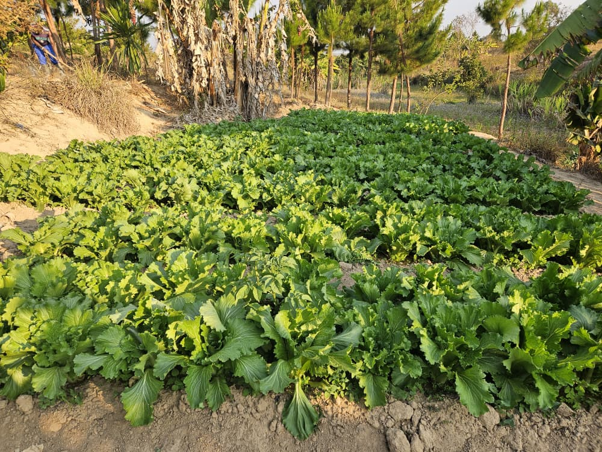
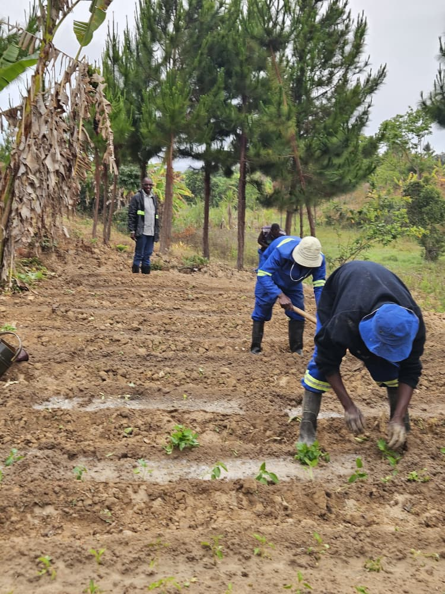

Home / About
About Abiti Sustainable Smart Farm
A growing Malawian agribusiness in Thandaza, Mzuzu, built on a legacy of love, generosity and togetherness.
Meet our founder
Alinafe Martha Dakishoni
Founder, Abiti Sustainable Smart Farm
Alinafe Dakishoni is a Malawian entrepreneur with a Bachelor of Business Administration in Finance from DMI St John the Baptist University, awarded in 2017. Her professional background includes finance, administration, banking, loan services and agricultural research, experience that has shaped her interest in building businesses that combine sound management, practical innovation and meaningful community impact.
Through Abiti Sustainable Smart Farm, she is developing an integrated agricultural enterprise that combines commercial production, innovation, sustainability and inclusive economic development.
The farm is also a personal tribute to her late grandmother, Martha Sikelo, whose generosity inspired the values behind the brand.
- EducationBBA in Finance, DMI St John the Baptist University (2017)
- ExperienceFinance, administration, banking, loan services and agricultural research
- VisionA credible, ambitious Malawian agribusiness that honours her grandmother's legacy while contributing to food security, agricultural entrepreneurship and community development
The story behind the name
A legacy of love, generosity and togetherness
The name Abiti has a deeply personal meaning. The farm was named in loving memory of the founder's late grandmother, Martha Sikelo, who was commonly known as Abiti.
She was a kind and generous woman who loved sharing with others. Her generosity and the way she cared for people left a lasting impression. In honour of her memory, the founder chose to carry her name forward through a business that reflects the values she represented.
At Abiti, we believe that growth is about more than what we plant, harvest or sell. It is also about how we treat people, support one another and create opportunities for others.
We envision Abiti as a welcoming and inclusive community where people can connect, share ideas, learn, support one another and feel that they belong. Through agriculture, innovation and community engagement, we hope to build a lasting legacy that benefits future generations.
Her name lives on in our farm. Her spirit lives on in our community.Martha Sikelo, affectionately known as Abiti
To produce quality agricultural products through sustainable and innovative farming practices while creating economic opportunities and contributing to food security and community development.
To become a leading integrated sustainable agribusiness in Malawi, recognised for agricultural excellence, innovation, environmental responsibility and inclusive economic growth.
Core values
What guides us

Sustainability
Using land, water and farm resources responsibly and building for future generations.
Integrity
Conducting business honestly, transparently and responsibly.
Innovation
Exploring better ways to produce food, such as Black Soldier Fly farming and Azolla.
Quality
Producing food our customers can rely on, harvest after harvest.
Inclusion
Opening agriculture to women, young people and farmers from different backgrounds.

Community empowerment
Sharing knowledge and creating opportunities that strengthen the communities around us.
Our growth journey
Where we are, and where we are going
We are clear about what is already running, what is set up and what is still being developed.
- Operational
Integrated enterprises
Vegetable and crop production, fish ponds, pig farming, local chickens and poultry incubation services on family-owned land in Thandaza.
- Setup established
Black Soldier Fly farming
Our BSF setup is established as the first step in our circular feed and soil approach.
- Work in progress
Azolla cultivation
Being developed as a potential supplementary feed for fish and livestock.
- Planned
Next stages
Solar-powered irrigation, expanded institutional supply and practical training for local farmers.
Our commitment
Sustainable agriculture and community development, together.
We are committed to responsible farming that protects soil and water, reuses resources and creates opportunities for women, young people and local farmers.